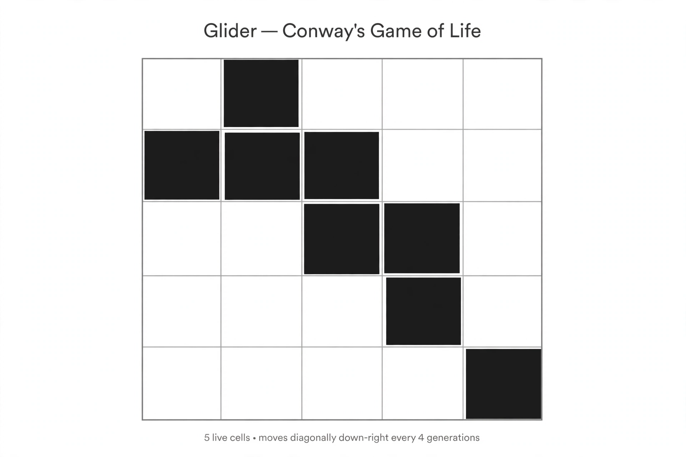

Cellular automaton

[Image: A grid with black cells forming a glider pattern from Conway's Game of Life]
A cellular automaton is a discrete model of a dynamical system: a grid of cells, each in one of a few states, updated simultaneously at each step by a rule depending on neighbouring cells. From simple rules, remarkably complex behaviour can emerge.
The most famous example is Conway's Game of Life (1970), devised by John Horton Conway and popularised by Martin Gardner's Scientific American column: patterns glide, oscillate, and even compute. Stanislaw Ulam and John von Neumann introduced cellular automata in the 1940s while studying self-reproducing machines.
Complexity from simplicity
Stephen Wolfram's systematic study of one-dimensional automata (1980s) classified their behaviour from boring to apparently random, and argued such systems are a model for nature's own computations.
Life is Turing complete — gliders and guns can implement logic gates — so cellular automata connect toy grids to the theory of computation and the limits of prediction: an automaton's long-term behaviour can be formally undecidable.